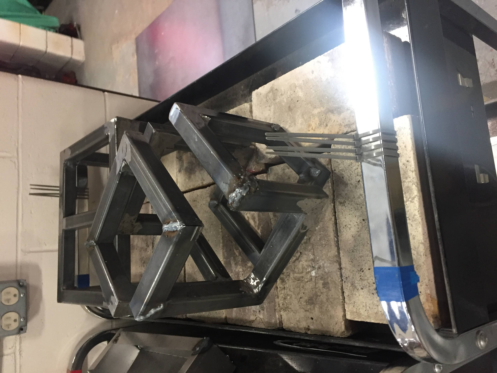
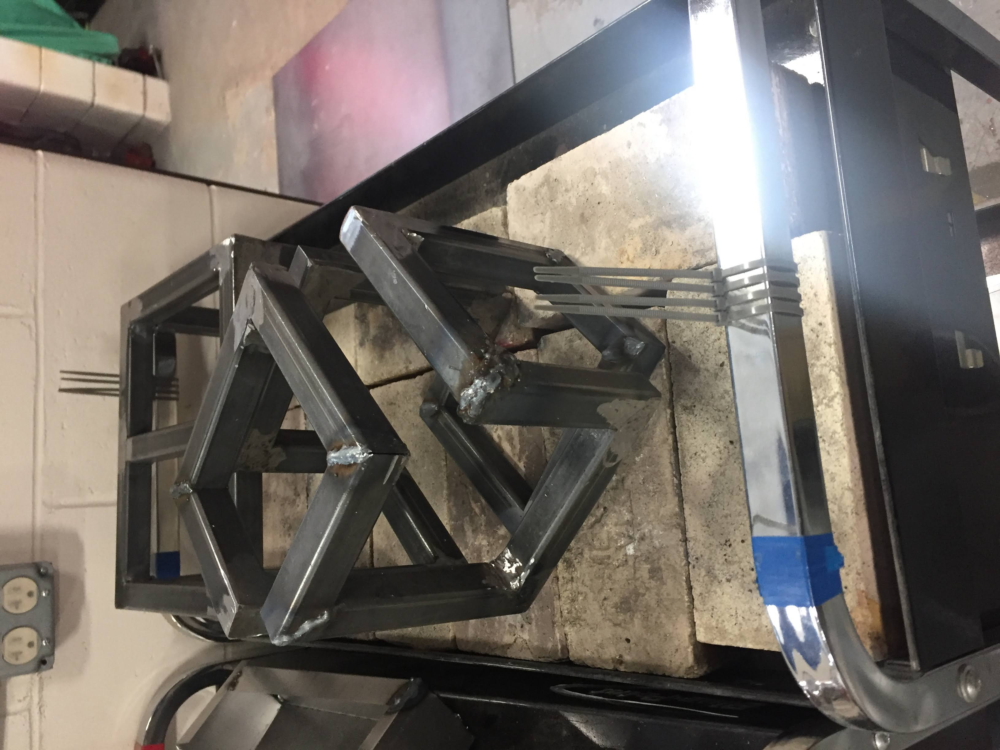

My Hobbies!
As I work a lot with computers, most of my work revolves around that. However, I still do my best to branch out and try new things. Here's some examples!
Origami
I've always loved folding paper, in whatever form I can. In elementary school I'd make some paper airplanes to throw and some noise-makers for fun.
I recently got involved in Modular Origami, which is the process of combining smaller, simpler units to make a more complex form. Just this past summer, I make an origami torus (essentially a donut) entirely out of post it notes. I used a template for individual units, and combined units to creat the final form.
View some of my creations below!


Ceramics
In high school, I started learning the fundamentals of ceramics. I always tried to go above and beyond the traditional requirements for the projects, which is why I take me ideas to the next level in complexity. This made the work a lot harder, but I got much more experienced due to the challenge!
Now that I'm in college, I don't get a lot of time to work with clay. But when I do, I still enjoy it a lot! Check out some of the things I've made!


Welding
Nothing terrifies a computer programmer more than melting metal!
However, I still loved working in robotics, so making things out of metal caught my interest. I took a course in welding, where I made a lot of complex forms for projects. I even did well enough to catch the attention of an art professor, who I helped in welding an art installation at my high school!

 


Reading
I love reading, specifically science fiction and action! I'm on track to read every novel that won the Hugo Award, and you can see my progress below:
Red is what I'm currently reading.
Blue is what I've already read.
Green is books I have but haven't read.